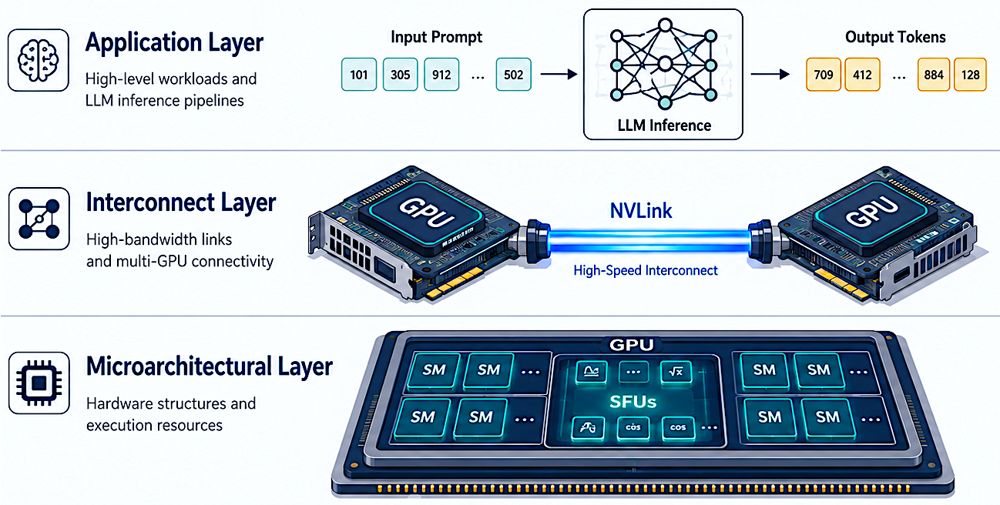

Issa Baddour
GPU Security | Microarchitectural Side Channels | AI Infrastructure
My research exposes and mitigates information leakage in GPU systems across three layers: microarchitectural resources, interconnect fabrics (NVLink), and LLM inference. I'm now seeking postdoctoral positions to advance security of AI infrastructure.
Advised by Prof. Somitra Kumar Sanadhya open_in_new and Prof. Dip Sankar Banerjee open_in_new
My postdoctoral research will focus on building observability-aware security mechanisms for AI infrastructure—designing GPU systems where performance and confidentiality coexist. I aim to develop isolation primitives for multi-tenant AI clusters, addressing vulnerabilities that emerge when LLM inference, microarchitectural contention, and high-speed interconnects intersect.
Research Interests
GPU Security
Microarchitectural Side Channels
Covert Channels
NVLink / Interconnect Security
LLM Inference Security
Side-Channel Analysis
Trusted Execution Environments
High-Performance Computing
PhD Thesis: Cross-Layer GPU Information Leakage
My thesis examines information leakage across three abstraction layers—microarchitectural resources, interconnect fabrics, LLM inference—demonstrating that no single mitigation eliminates all channels. The unifying finding is that GPU systems consistently expose measurable side-channel signals regardless of the abstraction level at which the attacker observes.

🔬 Microarchitectural Layer: 44.7 Mbps covert channel
Extended binary contention to four-level signaling on NVIDIA DGX A100. Achieved 44 Mbps (1 GPU) and 340 Mbps (8 GPUs). Behavioral randomization via SFU function combinations reduces ML detectability from 100% to 36%.
🔗 Interconnect Layer: NVLink attack surface
First study to expose NVLink contention across V100, A100, and H200. Covert channel: 6.33–9.90 Kbps with negligible error rates. Application fingerprinting via NVLink latency traces: 96.2% accuracy across 25 apps. Temporal and spatial partitioning countermeasures evaluated.
🤖 Application Layer: LLM inference leakage
CUDA runtime activity and GPU telemetry reveal model identity and prompt semantics. Model fingerprinting: 99.94% accuracy across 7 LLMs. Prompt-family inference: consistently above-chance across all models. First leakage study under realistic stochastic decoding.
Selected Publications
2026
SideLink: Exposing NVLink to Covert and Side-Channel Attacks
Issa Baddour, Somitra Kumar Sanadhya, Dip Sankar Banerjee
NVLink is a high-bandwidth interconnect in NVIDIA GPU systems that has become essential for AI workloads in data centers. Despite its high bandwidth, we show that NVLink exhibits measurable contention characteristics that enable both covert and side-channel attacks. We evaluate SideLink across NVIDIA's Hopper (H200), Ampere (A100), and Volta (V100) architectures, achieving covert channel bandwidths of 8.29 Kbps, 9.90 Kbps, and 6.33 Kbps respectively with negligible error rates. We further implement an application fingerprinting side-channel, achieving a maximum accuracy of 96.2% across 25 dual-GPU applications. We propose and evaluate temporal and spatial partitioning countermeasures for NVLink, analyzing their effectiveness and performance overhead.
2025
An Improved Micro-Architectural Covert-Channel Attack on GPUs
Issa Baddour, Somitra Kumar Sanadhya, Dip Sankar Banerjee
We address two major challenges in GPU covert-channel research: improving bandwidth and evading detection. We present an enhanced mechanism that extends binary contention-based communication to a four-level signaling scheme, achieving error-free communication at over 44 Mbps on a single GPU and over 340 Mbps across 8 GPUs on an NVIDIA DGX A100 system. We also systematically construct covert channels using every available function on the special function units (SFUs) and introduce behavioral randomization by dynamically combining these configurations. This randomized strategy achieves up to 38 Mbps (single GPU) and 274 Mbps (8 GPUs) with BER under 10%, and significantly reduces ML-based detectability compared to traditional approaches.
2024
SideLink: Exposing NVLink to Covert and Side-Channel Attacks (Work-in-Progress)
Issa Baddour, Somitra Kumar Sanadhya, Dip Sankar Banerjee
Work-in-progress version of SideLink, presented at SPACE 2024. We present the first attack exploiting the NVLink bus for covert communication and information leakage, evaluated across Hopper, Ampere, and Volta GPU architectures. Covert channel bandwidths of 6.33–9.90 Kbps with negligible error rates are demonstrated. Application fingerprinting via NVLink latency traces achieves 96.2% accuracy. Extended and fully evaluated version published as a journal article (HaSS 2026).
Under Submission
Side-Channel Leakage in Large Language Model Inference on GPUs
Issa Baddour, Somitra Kumar Sanadhya, Dip Sankar Banerjee
We study whether CUDA runtime activity, kernel execution patterns, and GPU telemetry can be used to infer hidden properties of LLM inference. Collecting execution traces from seven LLMs (OPT, Mistral, Phi-2, Qwen2, TinyLlama, Falcon, and one additional model) under realistic conditions—allowing variable input lengths, stochastic decoding, and natural termination—we evaluate two tasks: (i) prompt-family inference, recovering high-level semantic categories of inputs; and (ii) model fingerprinting, identifying the executing model. Model fingerprinting reaches up to 99.94% accuracy with combined features and exceeds 97% using individual feature groups. These results reveal an asymmetry between prompt- and model-level leakage: model-level execution signatures remain stable and highly distinctive, indicating persistent GPU-side fingerprints that are difficult to obscure under realistic inference conditions.
Research Projects
Execution-Level Covert Channels on GPUs
44.7 Mbps single-GPU / 340.5 Mbps 8-GPU covert channels with ML evasion (64% evasion rate)
SideLink: NVLink Side-Channel & Covert-Channel Attacks
First cross-generation NVLink attack (V100/A100/H200) | 96.2% app fingerprinting accuracy
Side-Channel Leakage in LLM Inference on GPUs
99.94% model fingerprinting across 7 LLMs under realistic stochastic decoding
Education & Experience
Education
Indian Institute of Technology, Jodhpur
PhD in Computer Science & Engineering | GPA: 9.25/10
Thesis: Information Leakage in GPU Systems: From Microarchitectural Contention to AI Inference
Supervisors: Dr. Somitra Kumar Sanadhya, Dr. Dip Sankar Banerjee
National Institute of Technology, Warangal
M.Tech in Computer Science & Engineering
Damascus University, Syria
B.E. in Computer Engineering | Ranked 1st in class (Gold-medalist equivalent)
Teaching
Teaching Assistant
- Algorithms for Big Data — IIT Jodhpur (2023, 2024)
- Network Applications Programming — Damascus University
- Advanced Programming — Damascus University
Technical Skills
Languages
GPU Systems
Profiling
Cloud & Systems
Honors & Awards
- 🏅 Ranked 1st in B.E. (Gold-medalist equivalent)
- 🌏 Fully funded international sponsorship for graduate studies
- 🇮🇳 ICCR Scholarship (Government of India) for M.Tech
- 📚 Multiple year-wise academic excellence awards (2012–2016)
Academic Service
- rate_review Reviewer: IEEE Transactions on Dependable and Secure Computing (TDSC)
- event_note Sub-reviewer: CF 2025, SPACE 2025, CANS 2024
Talks & Presentations
- Paper presentation — SPACE 2024
- Poster presentation — Cryptology Conclave, IIT Hyderabad (Jan 2026)
- Conference participation — Indocrypt 2022/2023, SPACE 2024, Digital Forensics Conf. 2026